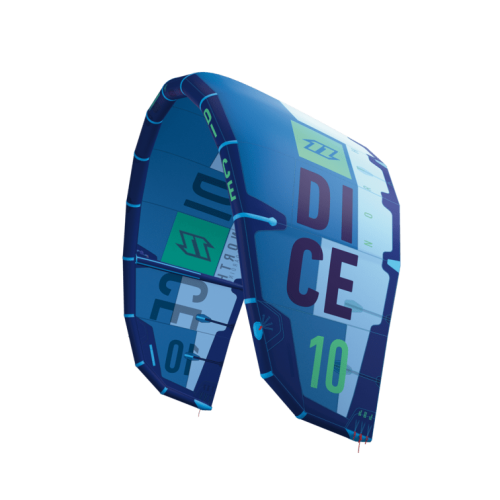
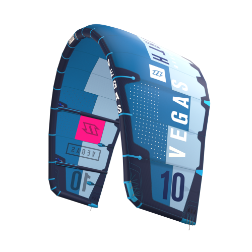

North Kiteboarding Dice

-C-ORIENTED DESIGN
-4 AND 5 LINES COMPATIBLE
-3-STRUT DESIGN
-GREAT LOOPING AND JUMPING ABILITIES
-VERY GOOD UNHOOKED PERFORMANCE
-GREAT DRIFTING ABILITES
-DIRECT AND FAST TURNING
The Dice is a perfectly balanced Freestyle/Wakestyle tool redefining versatility and performance in a
C-oriented three strut design, which can even impress in waves. It´s the ultimate kite of choice for
all those, who feel the design of the Vegas got a little bit too extreme over the years. A new panel
layout with an immensely stable Dacron frame and wave panels on the trailing edge, enhance durability
and the overall canopy stiffness. The dynamic curve of the tip strut offers responsive steering, whilst
the variety of different length pigtails give even more variation between the different settings. 4 and
5 line compatible, the Dice is a confidence giver with great rider feedback and incredible stability in
the air. If you want a kite that is especially prepared for all your Freestyle and Wakestyle tricks, but
is also able to perform in waves when actively steered, then the Dice is the one for you.
|
North Kiteboarding Vegas

-C KITE DESIGN
-LOADED 5TH LINE
-5 STRUT DESIGN
-BEST UNHOOKED PERFORMANCE AND POP
-RESPONSIVE POWER RELEASE DELAY
-PRECISE HANDLING
-3 AVAILABLE SETUPS AND NUMEROUS TRIMMING OPTIONS
The Vegas is the synonym for a pure Wakestyle/Freestyle C-kite machine with outstanding mega loop performance.
Maintaining its overall image and position as the most sold C-kite on the market, we've improved its in-flight
traits with pinpoint emphasis on precise handling. Having completely redesigned the middle section with extra
panels and a Dacron frame to the new 3D shaped canopy, we've managed to create an extremely stiff and durable
outline with better lift and even more aggressive pop with massive slack. No one-trick pony, the Vegas proved
itself by taking its second Red Bull King Of The Air title – the world's most extreme kiteboarding
event – at the hands of Aaron Hadlow.
|